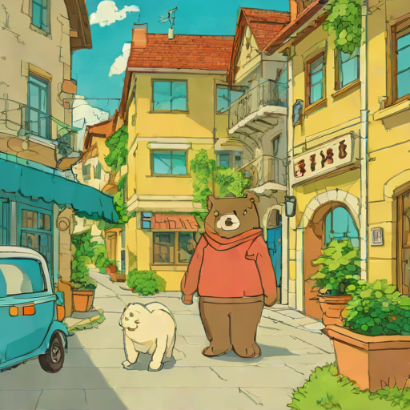
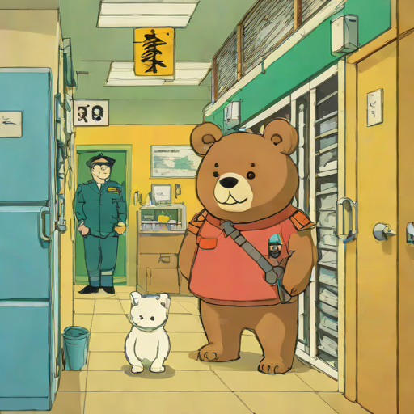
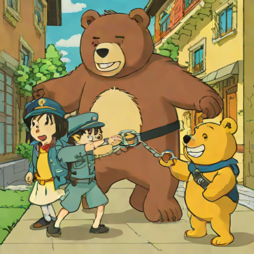
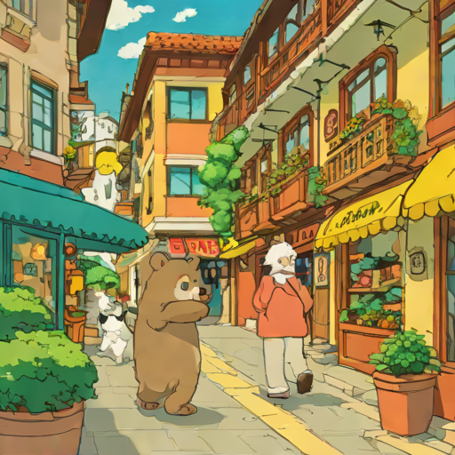
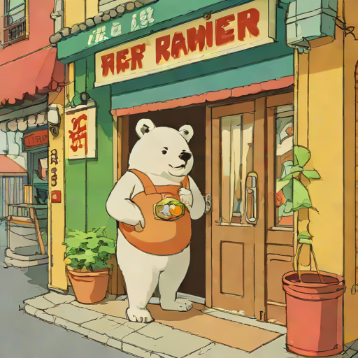
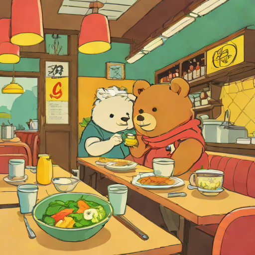
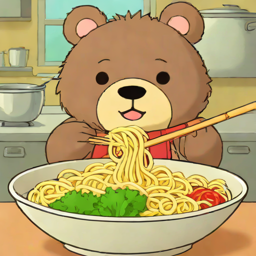
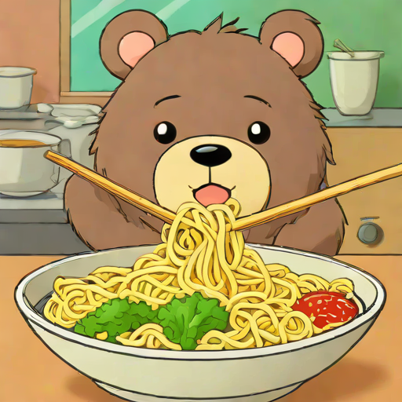

🚔一、警察局·レストランけいさつしょ
🔈
🚔
警察局
✓✗
警察署
けいさつしょ
keisatsusho
けい(警) さつ(察) しょ(署)
✓✗
🔈
👮
警察
✓✗
警察
けいさつ
keisatsu
✓✗
🔈
🦹
小偷
✓✗
泥棒
どろぼう
dorobou
✓✗
🔈
🖐️
抓住/逮捕
✓✗
捕まえます
つかまえます
tsukamaemasu
原形：捕まえる(tsukamaeru)
✓✗
🔈
🍽️
餐厅
✓✗
レストラン
れすとらん
resutoran
外来语 restaurant
✓✗
🔈
🍜
拉面
✓✗
ラーメン
らーめん
rāmen
✓✗
💡 へ(e) 表示"去的方向"，如：警察署へ行きます（去警察局的方向走）
💡 捕まえます → 捕まえました：把 masu 变成 mashita 就是过去式！
📝 绘本句子（点击听整句）：

🔊これから警察署へ行きます。
これから けいさつしょ へ いきます。
kore kara keisatsusho e ikimasu.
从现在开始要去警察局。
これから
kore kara
接下来
警察署
keisatsusho
警察局
へ
e
往(方向)
行きます
ikimasu
去

🔊しばらくして、警察署に来ました。
しばらくして、けいさつしょ に きました。
shibaraku shite, keisatsusho ni kimashita.
过了一会儿，来到了警察局。
しばらくして
shibaraku shite
过了一会儿
警察署
keisatsusho
警察局
に
ni
到(地点)
来ました
kimashita
来了

🔊ここは警察署です。
ここ は けいさつしょ です。
koko wa keisatsusho desu.
这里是警察局。
ここ
koko
这里
は
wa
主题助词
警察署
keisatsusho
警察局
です
desu
是

🔊泥棒を捕まえます。
どろぼう を つかまえます。
dorobou o tsukamaemasu.
要抓小偷。
泥棒
dorobou
小偷
を
o
宾语助词
捕まえます
tsukamaemasu
抓住

🔊警察は泥棒を捕まえました。
けいさつ は どろぼう を つかまえました。
keisatsu wa dorobou o tsukamaemashita.
警察抓住了小偷。
警察
keisatsu
警察
は
wa
主题助词
泥棒
dorobou
小偷
を
o
宾语助词
捕まえました
tsukamaemashita
抓住了

🔊これからレストランへ行きます。
これから れすとらん へ いきます。
kore kara resutoran e ikimasu.
从现在开始要去餐厅。
これから
kore kara
接下来
レストラン
resutoran
餐厅
へ
e
往(方向)
行きます
ikimasu
去

🔊しばらくして、レストランに来ました。
しばらくして、れすとらん に きました。
shibaraku shite, resutoran ni kimashita.
过了一会儿，来到了餐厅。
しばらくして
shibaraku shite
过了一会儿
レストラン
resutoran
餐厅
に
ni
到(地点)
来ました
kimashita
来了

🔊ここはレストランです。
ここ は れすとらん です。
koko wa resutoran desu.
这里是餐厅。
ここ
koko
这里
は
wa
主题助词
レストラン
resutoran
餐厅
です
desu
是

🔊今からラーメンを食べます。
いまから らーめん を たべます。
ima kara rāmen o tabemasu.
从现在开始要吃拉面。
今から
ima kara
从现在起
ラーメン
rāmen
拉面
を
o
宾语助词
食べます
tabemasu
吃

🔊ラーメンを食べました。
らーめん を たべました。
rāmen o tabemashita.
吃了拉面。
ラーメン
rāmen
拉面
を
o
宾语助词
食べました
tabemashita
吃了